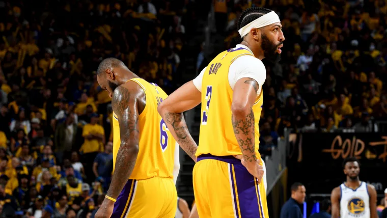

Los Angeles Lakers tras la eliminación de los Playoffs 2023
Fin al camino de Los Angeles Lakers en estos Playoffs 2023, en los que se marcharon por la vía rápida después de ser eliminados a manos de Denver Nuggets. El inesperado rendimiento de los angelinos, que llegaron hasta Finales de Conferencia, puede haber salvado un proyecto condenado al fracaso. Sin embargo, con esta eliminación el futuro de la franquicia se avista oscuro y difuso, con muchos cambios en el horizonte.
Un renacimiento express para salvar el proyecto
Si a un fan de los Lakers se le hubiera preguntado en enero cuál era el potencial del equipo de cara a la postemporada, alguien con cierta coherencia habría puesto el techo en el Play-In. Por debajo del 50% de victorias, un equipo que no funcionaba y un vestuario fracturado era el mejor resumen del curso angelino hasta entonces. Los múltiples cambios que se hicieron desde los despachos configuraron una nueva realidad, una con dos objetivos: salvar la temporada y tratar de encaminar la futura offseason. La primera meta la consiguieron en el mismo momento que eliminaron a los Grizzlies en Primera Ronda, sobrepasando cualquier límite imaginable al hacer lo propio después con Warriors. Aunque quizá, lo más relevante no vaya a ser el resultado final de la temporada, que acabó en las Finales del Oeste, sino cómo se ha encaminado la próxima campaña a nivel deportivo y salarial. Al liberar el salario de Westbrook, Beverley o Nunn se consiguió atraer a figuras con un potencial mayor a futuro, con carreras que necesitaban un impulso y, sobre todo, más figuras a un plantel escaso de nombres con un aporte real. La flexibilidad económica que garantizó esos movimientos han puesto a los angelinos en una posición más favorable para ser ganadores el curso siguiente, a pesar de que no tendrán nada fácil traer de vuelta a la mayoría de esos jugadores.
Los Angeles Lakers, rumbo a la temporada 2023-2024: Agentes libres, contratos y salarios
Las oficinas de los Lakers tienen una offseason sumamente complicada. Un año más Rob Pelinka va a tener que construir un equipo prácticamente desde 0, aunque ahora el panorama le da un mayor margen de maniobra que en ocasiones previas. El principal movimiento que deben hacer los californianos es la renovación de Austin Reaves, un hombre que define a la perfección lo que ha sido la temporada de los Lakers y que se ha ganado una extensión al alza. El máximo que le pueden ofrecer desde la franquicia es un contrato de 50,8 millones dividido en cuatro temporadas debido a que tienen sus derechos Early Bird. Por otro lado, cuentan con el punto a su favor de que es agente libre restringido, pudiendo igualar o superar cualquier oferta por Reaves. Mantenerle en el plantel es algo innegociable, la cuestión es si podrán rebajar algo el salario del escolta para así mantener cierto hueco para otras operaciones.
En un segundo nivel de importancia están las extensiones de D'Angelo Russell y Rui Hachimura, los cuales deberían permanecer en Los Ángeles si quieren definitivamente relanzar sus respectivas carreras. En el caso del primero, lo más positivo para los intereses de los Lakers es que haya firmado unos Playoffs tan desastrosos (13,9 puntos, 31,4% en triples), evidenciando lo que es: un secundario óptimo al que no pedir mucho más. Por otro lado, el alero japonés sí se ha revalorizado desde su llegada a California, pero su renovación debería darse por segura, más tras lo reportado por Wojnarowski en enero. Más allá de entrar a valorar otros nombres, los Lakers tienen un "problema" de difícil solución en este mercado: los cap holds. Esto es el salario previo del jugador que pasa a ser agente libre y que se mantiene virtualmente en los libros de cuentas de los equipos hasta que firme un nuevo contrato. De tal modo que los angelinos verán cómo pese a liberar una gran cantidad de dinero en la Agencia Libre su espacio no es tan amplio. Para desprenderse de los 99 millones de dólares que tendrán en cap holds, los Lakers deberían rechazar los derechos de nombres como Russell, Hachimura, Walker y una larga lista de jugadores. ¿El problema? Que si quisieran entonces firmarles lo harían como agentes libres y no como una extensión del previo vínculo con la franquicia.